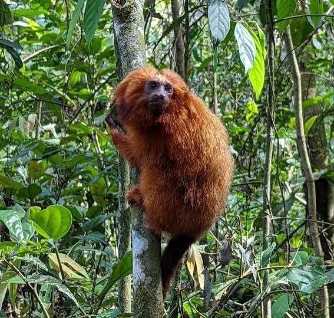
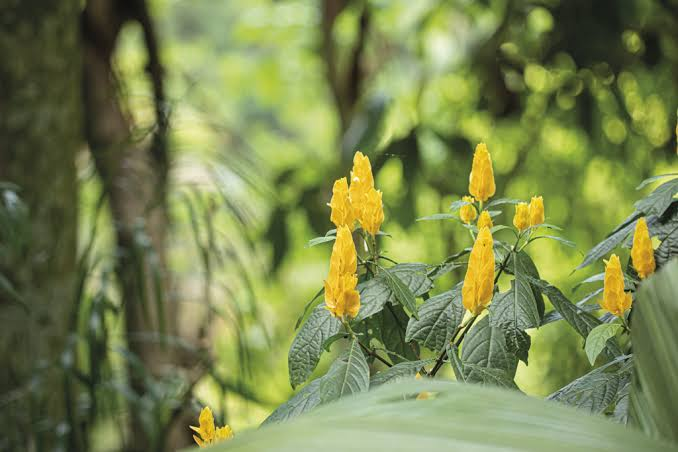
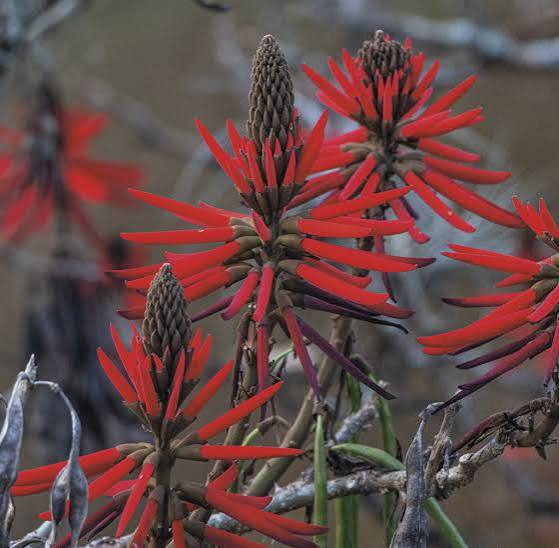
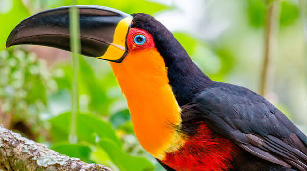
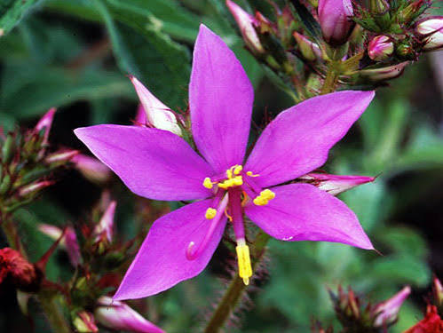

Conheça algumas espécies encontradas nos parques naturais de Teresópolis.
Encontrado em áreas preservadas da Mata Atlântica.

Importante para a dispersão de sementes.

Espécie de orquídea encontrada nas regiões úmidas e montanhosas dos parques.

Conhecida pela intensa floração durante o inverno.

Animal frequentemente observado em trilhas e áreas de visitação dos parques.

Planta muito comum na Mata Atlântica, importante para o equilíbrio do ecossistema.